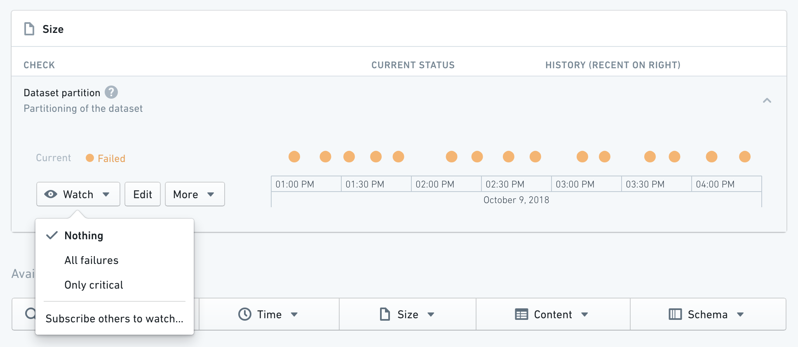
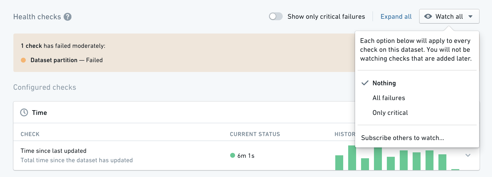

:::callout{theme="success" title="Tip"} Instead of watching individual checks, you can create and subscribe to a monitoring view. :::
You can watch checks to be alerted when they fail. You can watch an individual check by expanding it and selecting the Watch button:

According to the configuration in the Rule Section of the check:
Moderate and Critical).Critical failures.:::callout{theme="neutral"} We recommend setting different thresholds for Moderate and Critical checks. Ideally Critical alerts should have looser bounds (e.g. Build duration check fails Moderately if build takes 5 mins and Critically if it takes 10 mins). :::
You can also take any of the above actions on all checks on a dataset by using the Watch All button:

You can also pause or delete a check by expanding it and clicking the More button.